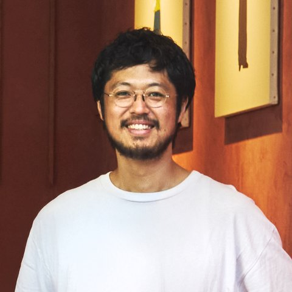

anhelo de plantas
a.d.pは、建築と内装の設計・監理を行う一級建築士事務所です。
「植物への憧れ」をスペイン語では、「anhelo de plantas 」というようです。
植物はその遺伝子に規則的な形のルールを持っています。その一方で、周辺環境の影響によりルールを少し逸脱しながら生育することで、それぞれに個性的な形へと成長します。人が植物を眺めるときに感じる心地良さは、そんな植物の形の成り立ちによるところもあると思っています。
そんな植物のように、おおらかに人の感情に作用する建築に興味があります。物事の背景から見出されるかたちが、あなたの個性や目的の特異性から影響を受けることで出来上がる空間が、生き生きとした空間をつくると考えています。
もうひとつ、「未来に残したいもの」「未来の誰かがいいねと言ってくれるもの」を一緒に考えましょう。答えはないと思います。それでも目下の目的だけでなく、その先を想像することで、今のわたしたちの期待を超えた愉しみをうみだせるのではないでしょうか。
このような気持ちで建築に向き合っています。概要だけを伺って、デザインを提案することはあまり得意ではありません。対話し、お互いの個性を理解し尊重できるからこそ、良い空間に辿り着ける。そんな過程をいっしょに楽しめたら幸いです。

代表・一級建築士坂田 裕貴